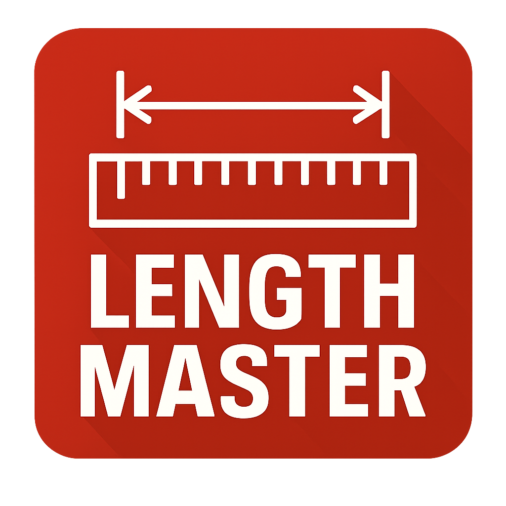

Length Master
Calculate total lengths of selected AutoCAD entities with high accuracy. Ideal for cables, pipelines, ducts, and infrastructure networks without modifying the drawing.
Coordinates Master
Extract precise coordinates and generate professional tables with leaders pointing directly to entities. Designed for survey, documentation, and QA workflows.